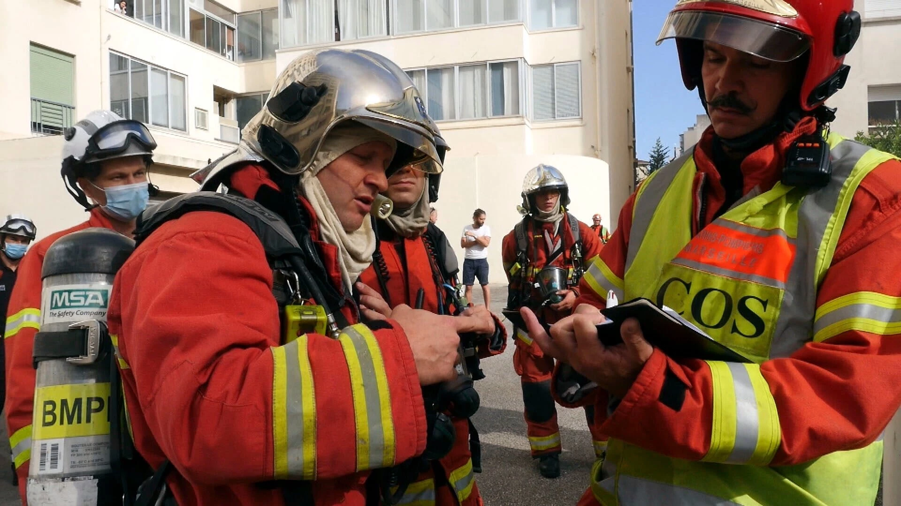

Qui suis-je ?
Après un bachelor universitaire de technologie en hygiène sécurité et environnement, je poursuis actuellement un cycle ingénieur génie industriel 4.0 à l'ENSIBS. J'effectue ce cursus en alternance au sein d'une untée de marins-pompiers.
Dans 10 ans ?
A l'issu de mon cursus ingénieur, je souhaite passer le concours d'officier SECUR au sein de la Marine Nationale. Ce concours me permettra de devenir officier marin-pompier au sein du Bataillon des marins-pompiers de Marseille. Dans 10 ans, j'espère être chef d'une caserne de marins-pompiers à Marseille, où je pourrai allier mon métier d'ingénieur et ma passion pour le secours.
